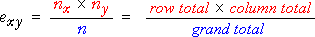

If you don't want to print now,
Relationships
The relationship between two numerical variables can be summarised by a correlation coefficient and least squares line. Two categorical variables may also be related.
We say that two categorical variables are associated if knowledge of the value of one tells you something about the likely value of the other.
If the conditional distribution of Y given X = x depends on the value of x, we say that X and Y are associated.
Example
We illustrate the idea of association with an artificial example relating athletic performance of high school children to their weight. The table below shows the joint probabilities for these children.
| Athletic performance | ||||
|---|---|---|---|---|
| Poor | Satisfactory | Above average | Marginal | |
| Underweight | 0.0450 | 0.0900 | 0.0150 | 0.1500 |
| Normal | 0.0825 | 0.3025 | 0.1650 | 0.5500 |
| Overweight | 0.0500 | 0.1200 | 0.0300 | 0.2000 |
| Obese | 0.0300 | 0.0650 | 0.0050 | 0.1000 |
| Marginal | 0.1700 | 0.5400 | 0.2900 | 1.0000 |
A proportional Venn diagram displays the conditional probabilities for performance, given weight category, graphically.
If we know that a child has normal weight, there is a higher probability of having above average athletic performance than an overweight child. Since the conditional probabilities for performance, given weight are different for different weight categories, the two variables are associated.
Independence
If the conditional probabilities for Y are the same for all values of X, then Y is said to be independent of X.
If X and Y are independent, knowing the value of X does not give us any information about the likely value for Y.
Example
An example of independence is given by the following table of joint probabilities for the weight category and mathematical ability of high school children.
| Mathematical performance | ||||
|---|---|---|---|---|
| Poor | Satisfactory | Above average | Marginal | |
| Underweight | 0.0225 | 0.1125 | 0.0150 | 0.1500 |
| Normal | 0.0825 | 0.4125 | 0.0550 | 0.5500 |
| Overweight | 0.0300 | 0.1500 | 0.0200 | 0.2000 |
| Obese | 0.0150 | 0.0750 | 0.0100 | 0.1000 |
| Marginal | 0.1500 | 0.7500 | 0.1000 | 1.0000 |
The proportional Venn diagram for this model is shown below.

The conditional probability of above average maths performance is the same for all weight categories — knowing a child's weight would not help you to predict maths performance. The two variables are therefore independent.
Mathematical definition of independence
If Y is independent of X, then:
Assessing independence from a sample
Independence is an important concept, but it is defined in terms of the joint population probabilites and in most practical situations these are unknown. We must assess independence from a sample of individuals — a contingency table.
Example
The contingency table below categorises a sample of 214 individuals by gender and some other characteristic (possibly weight group or grade in a test).
| Male | Female | Total | |
|---|---|---|---|
| A | 20 | 60 | 80 |
| B | 9 | 84 | 93 |
| C | 2 | 39 | 41 |
| Total | 31 | 183 | 214 |
Is this consistent with a model of independence of the characteristic and gender? (Are the probabilities of A, B and C grades the same for males and females?)
Estimated cell counts under independence
To assess independence, we first find the pattern of cell counts that is most consistent with independence in a contingency table with the observed marginal totals.
| Male | Female | Total | |
|---|---|---|---|
| A | ? | ? | 80 |
| B | ? | ? | 93 |
| C | ? | ? | 41 |
| Total | 31 | 183 | 214 |
The pattern that is most consistent with independence has the following estimated cell counts:

where n denotes the total for the whole table and nx and ny denote the marginal totals for row x and column y.
Applying this to our example gives the following table:
| Male | Female | Total | |
|---|---|---|---|
| A |  |
80 | |
| B | 93 | ||
| C | 41 | ||
| Total | 31 | 183 | 214 |
Comparison of observed and estimated cell counts
We test for independence with the hypotheses:
H0 : X and Y are independent
HA : X and Y are dependent
The test asks whether the observed and estimated cell counts are 'sufficiently close' — are the observed counts consistent with the counts estimated under independence?
| Male | Female | Total | |
|---|---|---|---|
| A | 20 (11.59) |
60 (68.41) |
80 |
| B | 9 (13.47) |
84 (79.53) |
93 |
| C | 2 (5.94) |
39 (35.06) |
41 |
| Total | 31 | 183 | 214 |
Possible test statistic?
A simple summary of how close the observed counts, nxy, are to the estimated cell counts, exy, is the sum of the squared differences,

Unfortunately this would be a bad test statistic — its distribution depends not only on the numbers of rows and columns in the table, but also on the number of individuals classified — the overall total for the table. A better test statistic is presented in the next page.
A better test statistic
The following χ2 (pronounced chi-squared) statistic has much better properties than the raw sum of squares on the previous page

Its distribution only depends on the number of rows and columns in the contingency table.
Distribution of chi-squared statistic
When there is independence, the χ2 statistic for a contingency table with r rows and c columns has approximately a standard distribution called a chi-squared distribution with (r - 1)(c - 1) degrees of freedom.
The mean of a chi-squared distribution equals its degrees of freedom and it is skew. Some examples are given below for contingency tables of different sizes:

Testing for independence
H0 : X and Y are independent
HA : X and Y are dependent
The following test statistic is used:

P-value

The p-values is interpreted in the same way as for other hypothesis tests — it describes the strength of evidence against the null hypothesis:
| p-value | Interpretation |
|---|---|
| over 0.1 | no evidence against the null hypothesis (independence) |
| between 0.05 and 0.1 | very weak evidence of dependence between the row and column variables |
| between 0.01 and 0.05 | moderately strong evidence of dependence between the row and column variables |
| under 0.01 | strong evidence of dependence between the row and column variables |
Warning about low estimated cell counts
The χ2 test statistic has only approximately a chi-squared distribution. The p-value found from it can be relied on if:
If the cell counts are small enought that these conditions do not hold, the p-value is less reliable. (But advanced statistical methods are required to do better!)
Examples


Contingency tables and groups
Contingency tables can either arise from bivariate categorical data or from univariate categorical data that is recorded separately from several groups.
The chi-squared test assesses independence in bivariate data. The same test can also be used to compare the different groups if there is grouped data.
Example